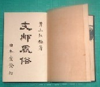
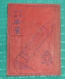

|
書名 |
内容 |
著者 |
出版社 |
刊行日 |
| 1 |
麻雀の常識を破る本 |
世界初のコンピュータ解析刊行本。※世界初のコンピュータ解析そのものは、「清一多門張の研究」（月刊プロ麻雀<S57/4>） |
朝日新聞 |
朝日新聞 |
S57.10.1 |
| 2 |
麻雀金言集 |
日本初の麻雀金言集 |
天野大三 |
鶴書房 |
S44/5 |
| 2 |
支那風俗 |
支那風俗の詳細な研究書。その中に中国ゲームとして麻雀を紹介。日本語で書かれた麻雀紹介としては２番目であるが、レゾンデートルがある。 |
井上紅梅 |
上海・日本堂 |
T8/8 |
| 3 |
趣味講座・麻雀の話 |
麻雀の話が電波(NHKラジオ)にのった最初（講演をまとめた本）。 |
空閑緑 |
|
S3/5 |
| 4 |
麻雀教室 |
平易な文章とユニークな視点による解説でベストセラーに。 |
五味康祐 |
日本文芸社 |
S41.4.25 |
| 5 |
麻雀詳解 |
日本語で書かれた初めての麻雀書。 |
肖閑生 |
|
T6/12 |
| 6 |
日華麻雀争覇戦 |
最初で最後の日本中国対抗戦。これ以後、またたくまに互いのルールが変化してゲーム不可能な状態に.... |
杉浦末郎 |
大阪屋号 |
S5.10.5 |
| 8 |
麻雀・インチキ看破法 |
日本最初のイカサマの解説書。 |
日本麻雀誌 |
|
S5 |
| 9 |
支那加留田ノ取リ方 |
和紙 ＆ 和本装丁！ 開くときには慎重にしないと破れる・・・・ |
日華山人 |
済南・廣源公司 |
T13 |
| 10 |
支那骨牌・麻雀 |
日本国内で刊行された最初の麻雀書。日本の麻雀書、最初のベストセラー。 |
林 茂光 |
文英堂 |
T13/7 |